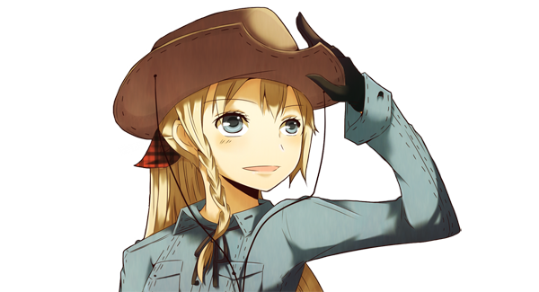
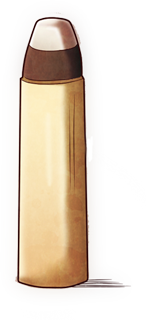

The future of the web with Cowboy and Ranch
And other projects
Loïc Hoguin - ホーガン・ロイック - @lhoguin
Erlang Cowboy and Nine Nines Founder
Cowboy

Cowboy 0.8
- Use Ranch for connections handling
- cowboy_req API cleanup (opaque Req)
- REST API improvements (better POST, PATCH support)
- Websocket sub-protocol support
- User guide started
Cowboy 0.10
- SPDY support
- Dispatcher API
- Compression support (HTTP + Websocket)
- User guide improved
Cowboy 0.12+
- Small improvements
- Small additions
- Automated testing of release upgrades
- Stabilization
- Final touches to user guide
Cowboy 1.0
- Stable
- Packaging? Cowboy for FCGI, Cowboy for WSGI...
- Cowboy book?
Ranch 0.6
- Allow starting a listener for an already open socket
- Small changes
Ranch 1.0
- Stable
- Cowboy + Ranch book?
Bullet

Bullet 0.4
- Better transport for IE browsers
Bullet 0.6
- Automated testing of all supported browsers
Bullet 1.0
- Stable
- Cowboy + Ranch + Bullet book?
Farwest
- Kinda hard to decide on a logo for that one
- Ultimate goal
Farwest 0.2
- Distributed presence server
- Sessions
- Authentication
Farwest 0.x
- User-interface to build apps without Erlang knowledge
- Specialized distributed database for the temporary storage of sessions
- Library for all the common operations in web development
Other related projects
Upcoming trainings
- Erlang/OTP introduction (3 days of Erlang/OTP, distribution and releases)
- Erlang/OTP advanced (3 days walkthrough to build a medium sized system)
- Cowboy 101 (2 days of HTTP and Websocket, 1 day of web architecture)
- French/English, on-site or through pre-recorded online lessons
Upcoming books?
- The definitive Cowboy reference
- Building Erlang/OTP systems:
- Building an FTP server from scratch
- Building a worker pool from scratch
- Building a distributed database from scratch
- ... Ideas welcome!
Questions?
- Examples:
- Is the sky blue?
- Where do you find girls in Tokyo?
- Etc.